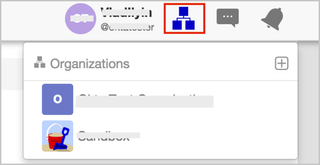
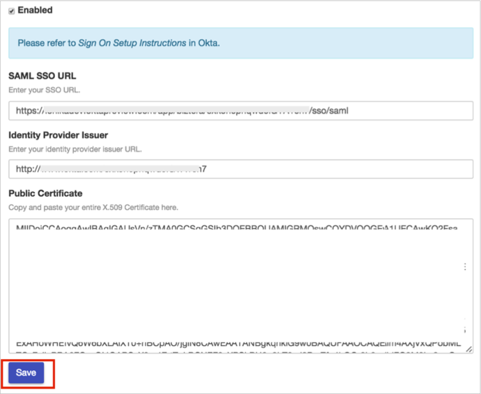

Login to Biztera as an administrator.
Select the Organization you want to enable SAML 2.0 for:

Select the Advanced tab for your orgnization:
Select SAML from the Advanced drop down menu:

On the SAML configuration screen, enter the following (see screen shot at end of step for reference):
Check the Enabled box.
SAML SSO URL: Copy and paste the following:
Sign into the Okta Admin Dashboard to generate this variable.
Identity Provider Issuer: Copy and paste the following:
Sign into the Okta Admin Dashboard to generate this variable.
Public Certificate: Copy and paste the following:
Sign into the Okta Admin Dashboard to generate this variable.
Click Save.

Done!
Notes:
IdP-initiated flows and Just In Time (JIT) provisioning are supported.
SP-initiated flows are not supported.